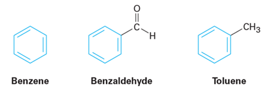
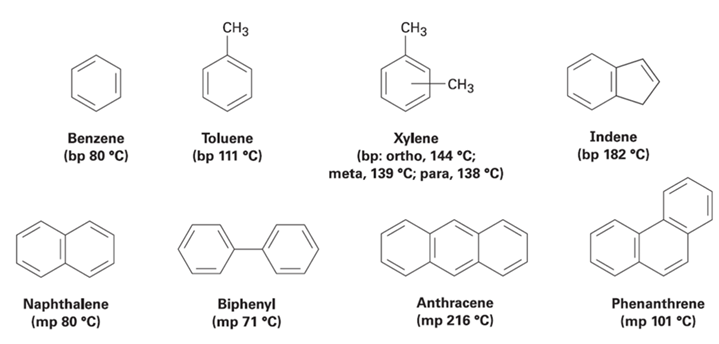
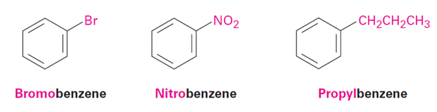
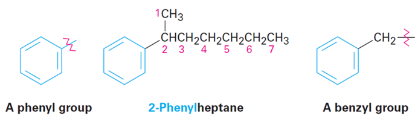
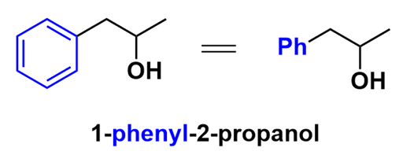
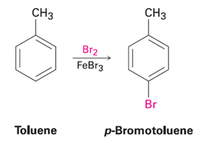
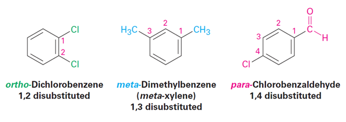
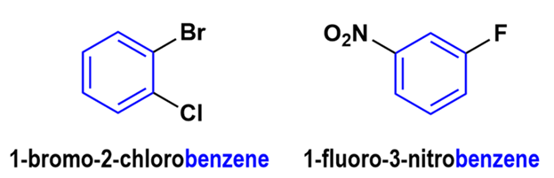
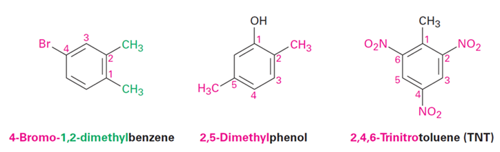

벤젠과 방향족성 : 방향족 화합물의 명명

방향족은 위와 같이 벤젠고리를 가지고 있는 물질을 의미한다.

방향족 화합물은 특별히 IUPAC 명과 함께 관용명을 사용하기도 한다. 이러한 관용명에는 벤젠 톨루엔 자일렌 나프탈렌 바이페닐 등이 있다.
명명으로는 벤젠을 모체로 두고 나머지를 치환기로 둔다.

그런데 치환기가 벤젠보다 탄소가 크거나 OH기, 카보닐기(=O) 등 우선순위가 높은 치환기가 있으면 그때는 벤젠이 치환기가 되기도 한다.

그때는 벤젠이 치환기가 되어 페닐이라고 불린다. 또는 벤젠+CH2기가 있으면 벤질기라고 불린다. 벤젠이 치환기가 되는 경우의 예시는 다음과 같다.

벤젠에 치환기가 있으면 1,2 / 1,3 / 1,4 치환이 가능하며 이때 각각을 오쏘 메타 파라라고 부른다.
  
위에는 1,2치환 벤젠의 명명이었다.
그러면 다중 치환 벤젠의 명명법은 무엇일까? 이것도 동일하게 모체를 벤젠으로 두고 나머지를 번호 배정하면 된다.
